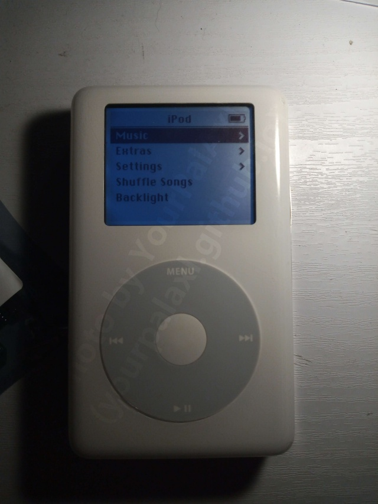

News
I got an iPod, and you should too. - Entry Date: 9th October 2025
So, after a long while of resisting the urge, I finally decided to get an iPod!

My specific iPod is a 4th Generation Monochrome iPod classic! I had purchased it on an eBay auction for £33. It was listed as for being for a for parts only device. It had arrived yesterday. It was in far better condition than I initially imagined. While, it was initially displaying the dead/sad iPod screen initially, I was somehow able to get the hard drive working again by re-plugging it. Beforehand, it would spin up and down approximately 4 times before displaying the dead iPod screen.You likely know of the recent increase in the iPod and similar devices being bought. People are finally starting to realise that with streaming services, you own nothing. People are realising that you are no longer in control. You may be laughing now, but just imagine. You deciding to listen to your favourite song while out on a walk, or while doing work, but uh oh! Where's it gone? You can't seem to find it at all! You put it in playlists, you even check the other streaming platforms, but it's gone! It's like you awoken in an alternate reality where said song never existed! Seems like a snippet of fiction, right? Wrong. Hell, maybe some scumbag government will cause the streaming service that you use to give over your personal identification just to be able to listen to any song. (*cough cough* UK. *cough cough*)
Unfortunately, this is now the dystopian future we live in. All because humans are blinded by convenience. Streaming has ripped away our control. Streaming has ripped away our ownership of music. We let it happen willingly. We're now required to be online constantly just to play music. Your experience always gets ruined by adverts. These platforms are also getting social media jammed into them. It makes things very difficult for those who want to get away. These platforms are also crammed full of soulless algorithm generated slop.
The iPod however, was from a time where most tech were still user-oriented. The iPod will happily work outside. The iPod can still do basic functions without internet. The iPod doesn't have adverts shoved in your face. You won't get soulless artificial slop slapped in your face. The iPod doesn't control how many times you can skip. The iPod isn't a brick with flashing colours, constant notifications, and distractions. It helps you get away. It helps you focus. The iPod isn't an addictive drug. People have had enough. People are finally seeing through the lies of convenience. This is why people are going back to older phones. This is why people are jumping back to iPods.
Unfortunately however, especially among the older generations, some hardware within an iPod (Notably the hard drive and the battery) have a tendency to not be able to survive the test of time. Unfortunately you can't just plug the iPod in and expect things to work, even if you are lucky enough to find a boxed one. You will have to make some internal replacements. Depending on who you are, this may be a bumpy road, or it may be a smooth one. Either way the reward of the learning curve, experience, and unrestricted listening will be worth it. As you were the one that fixed up this device, regardless of where you bought it, you will actually gain a personal connection to the device. Fixing an modding an iPod, just like a car, will give you the sense that this is YOUR iPod. This is YOUR iPod that you had this experience with.
One of the most notable modifications you should make with your iPod before daily driving it, is flash modding. Not only will it replace that worn out unreliable hard drive, but others around you will no longer be subject to the constant whirring and clicking of said hard drive. Flash storage is usually faster than hard drives of this vintage, this means that your iPod could run faster! Flash storage usually requires less power than a hard drive too, so it could extend your battery's lifetime too. On that topic, it's also best that you replace your iPod's battery. This is because with time, and use, rechargeable batteries can degrade massively. This can result in significantly less play times, or it some cases, the complete inability for the battery to hold even a tiny bit of charge.
The methods and difficulty of opening, operating on and testing iPods differ depending on the model. I recommend you do some research and look at guides before tearing open or purchasing parts for your iPod. As with all tech, take utmost caution when operating on the internals. Always expect a ribbon cable to be hiding in a stupid place before opening something. It's better to give it a shot, but if you know that you can't do it, or if you can't step out of your comfort zone, someone you know might be able to do it for you. Just be sure they actually know what they're doing.
Whatever you decide, I wish you the best of luck in your iPod listening endeavours! As of writing, at 01:55 AM, the last part of the flash mod for my iPod will be arriving later on! Be sure to check back at the news section soon for an update on how my experience goes!
(I have posted the update! It's available here!)